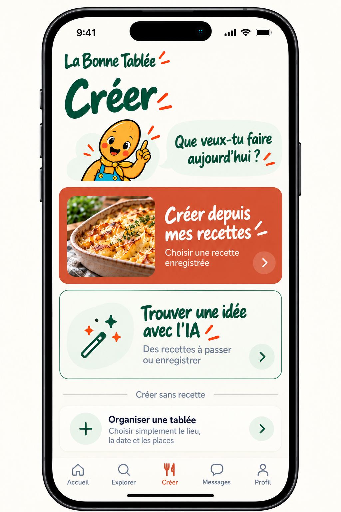
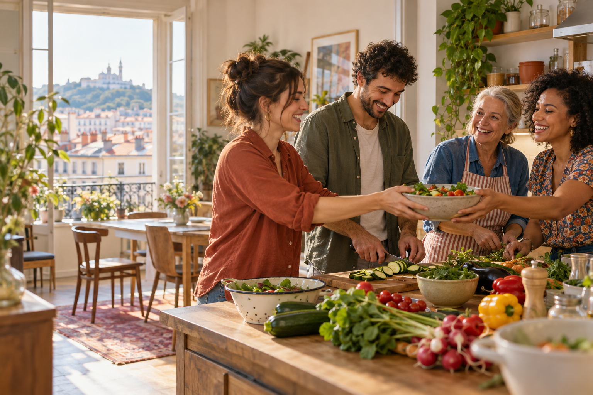
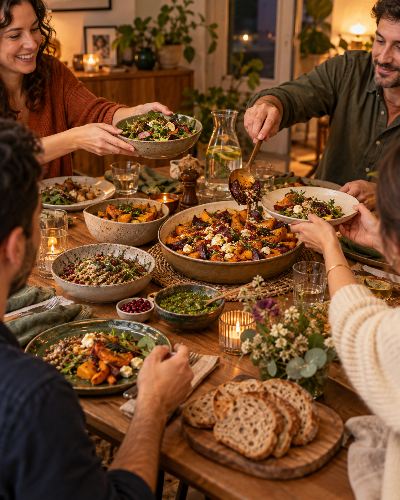

Choisir
Découvre les tablées proposées dans ton quartier.
La Bonne Tablée met en relation des voisins autour d’un repas fait maison. Une tablée, une recette, quelques personnes, et le plaisir de passer un bon moment ensemble.
On passe de l’envie de partager un repas à une vraie rencontre, sans organisation compliquée.
Découvre les tablées proposées dans ton quartier.
Choisis ta place et indique ta contribution.
Prépare la recette avec les autres convives.
Passe un moment chaleureux autour de la table.

Choisis un repas de quartier, réserve une place et découvre à l’avance comment participer. La fiche indique la recette, la date, les places disponibles et la contribution attendue.
Tu publies une tablée avec ta recette, une date et quelques places. Les participants savent dès le départ comment ils peuvent contribuer.



Hôtes et invités créent ensemble un moment local, gourmand et convivial.
« J’ai réservé une place, apporté quelques légumes et rencontré des voisins que je n’aurais jamais croisés autrement. »
Bernard, invité de La Bonne TabléeUne tablée est un repas proposé par un hôte. Elle précise la recette, la date, les places et les modalités de contribution.
L’hôte indique ce que les invités peuvent apporter : un ingrédient, de l’aide pendant la préparation ou une participation financière.
Depuis l’application, tu choisis une tablée, lis ses informations et confirmes ta participation.
Oui. L’essentiel est de proposer un moment clair et accueillant. Les invités peuvent aussi participer à la préparation.
Écris-nous. Le formulaire prépare directement un e-mail à notre équipe.
Découvre les tablées disponibles ou propose la tienne depuis l’application.
Accéder à l’application